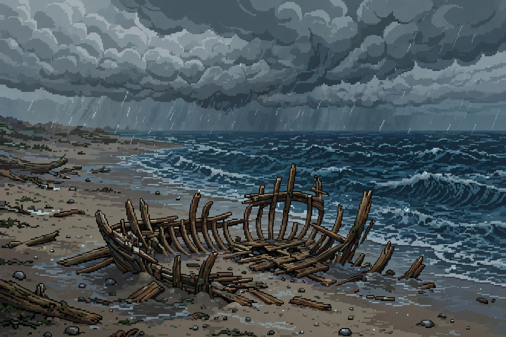

WEEK 02 · SEPTEMBER 28, 2026  waves drag the beach bare a wooden rib exhales sand the storm kept its bones From the news: a nor'easter uncovered the remains of the 19th-century schooner Warren Sawyer, wrecked in 1884, on Nantucket's south shore. source ← home← week 01week 03 →